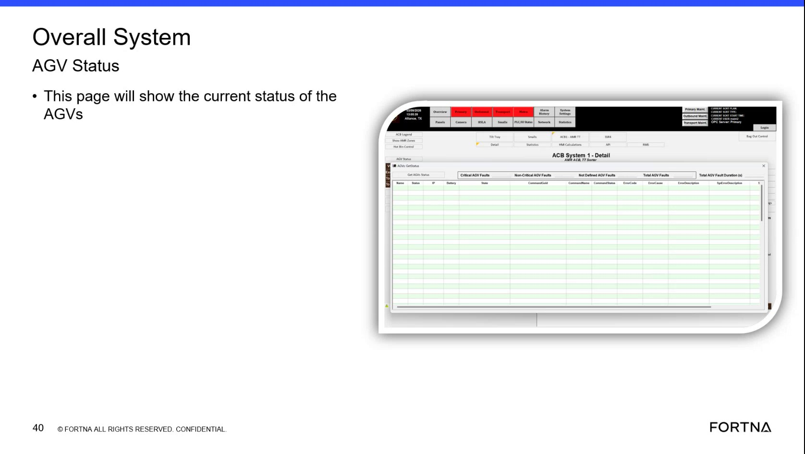

| Procedure ID | proc_check_rms_overall_system_agv_status_remote_availability_v1 |
|---|---|
| Title | Check RMS for Overall System AGV Status to confirm remote availability |
| Procedure Type | diagnostic |
| Primary Role | L1_support |
| Support Safe | Yes |
| Capability Tags | fleet_system_status |
| Access Surface | rms_ui |
| Audience Roles | L1_support |
| Failure Pattern Tags | None |
| Validation Status | needs_sme_review |
| Merge Status | source_finalized |
Use the RMS / fleet status web UI to open the page titled “Overall System AGV Status” and confirm the page loads and displays the current overall system status content. This is used to verify remote availability of the RMS overview page.
When you need to confirm that the RMS fleet status UI is reachable remotely and that the “Overall System AGV Status” overview page is displaying the current overall system status.

Responsible role: L1_support
Instruction:
Open the RMS / fleet status web UI (rms_ui).
Expected result:
RMS / fleet status UI opens successfully (i.e., you can proceed to navigate within RMS).
Stop or Escalate If:
Responsible role: L1_support
Instruction:
Within RMS, navigate to the page titled “Overall System AGV Status”.
Expected result:
The “Overall System AGV Status” page is displayed (page title/header visible).
Stop or Escalate If:
Responsible role: L1_support
Instruction:
On the “Overall System AGV Status” page, observe the page content that indicates the current overall system status (the page is described as showing the current status).
Expected result:
The “Overall System AGV Status” page loads and displays current overall system status information (not blank/unavailable).
Stop or Escalate If: